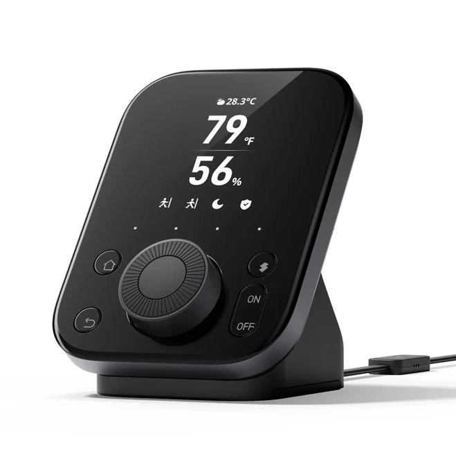

厨房智能硬件 / 家庭 AI 入口
SwitchBot Hub 4 把语音、旋钮与家居设备放进同一控制台
2.8 英寸屏、可编程快捷键与旋钮并置；红外和 Matter 扩展老旧家电接入，语音与自动化能力仍受设备兼容和联网条件限制。

SwitchBot 于 11 月 16 日发布 Hub 4，将自有语音助手 Hello Kata、2.8 英寸彩屏、实体旋钮和四个快捷键装进一台家庭中枢。品牌称其支持超过 10.1 万种红外设备型号，并可通过 Matter 连接最多 30 个子设备；上市地区包括美国、加拿大、英国和欧洲，标价分别从 119.99 美元、129.99 英镑或 129.99 欧元起。
它不是一台厨房电器，但能说明家庭控制入口的设计方向：家人既可说话，也能看屏、按键或转旋钮；老旧设备可经红外接入，部分红外控制在完成匹配后可本地运行。需要留意，语音助手及远程控制仍依赖网络，自动化的创建和管理也要回到 App。对厨电而言，真正的机会是让常用场景无需打开手机，而不是简单再叠加一个语音按钮。
SwitchBot / PR Newswire｜Hub 4 发布公告 · 2026-11-16 07:33 ET（北京时间11月16日20:33）SwitchBot 官方支持中心｜Hub 3/Hub 4 屏幕说明配图（前代产品） · 前代 Hub 3 产品图；用于展示产品家族外形品牌公告：11月16日07:33 ET；折合北京时间11月16日20:33，位于本期24小时窗口内。